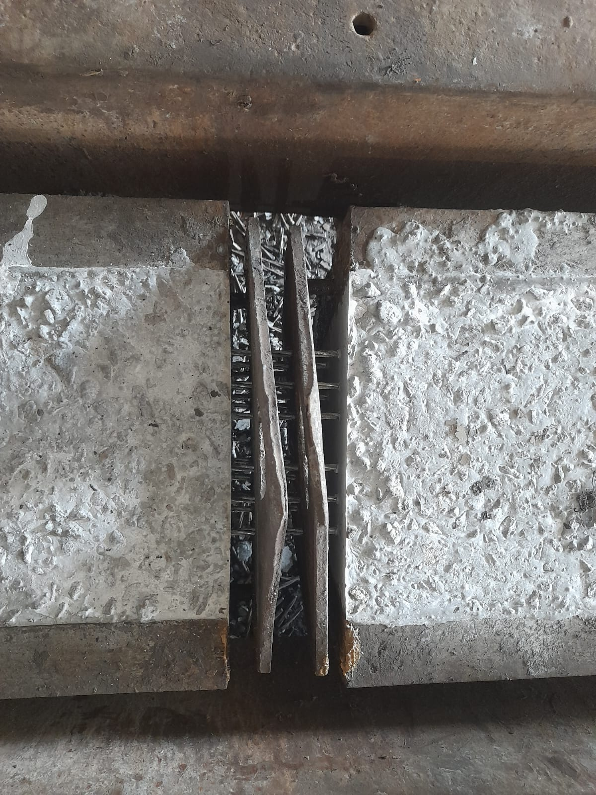
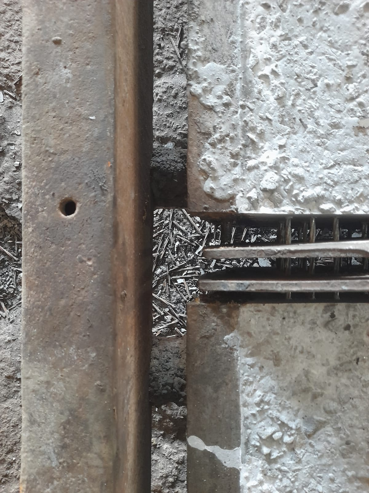

Horizontal Metal Strings
1. Original Image

Raw input image containing horizontal metallic rods/strings with uneven light reflection.
2. Morphological Top-Hat

Filters out the local background light gradient, leaving only thin high-contrast bright features.
3. Contour Selection Mask

Detects elongated structures (red boxes). Filters out noise by checking aspect ratio & angle.
4. 1D Projection Detection

Identifies exact rod centerlines (red lines) using 1D integration. Bypasses all local spot noise.
Why we can isolate the background perfectly:
- Uneven Illumination: Top-Hat morphological filtering successfully sets the dark grey background to a perfect, uniform black, leaving only the rods.
- Debris and Spots: Background specks and circular dust spots are eliminated by enforcing an aspect ratio filter (width/height > 3.0) and orientation filter (angle ≈ 0°).
- Integrated Signal: The 1D Horizontal Projection profile averages out any dust and local shadows across the rod length, providing an ultra-robust peak for each rod.
Vertical Metal Strings
1. Original Image

Raw input image containing vertical metallic rods/strings under complex workspace background.
2. Morphological Top-Hat

Successfully extracts vertical high-intensity segments while darkening the surrounding context.
3. Contour Selection Mask

Draws boxes only around vertical elongated contours, ignoring other background artifacts.
4. 1D Projection Detection

Detects the column coordinate spikes (red lines). Extremely clean and immune to localized noise.
Why we can isolate the background perfectly:
- Directional Selectivity: For vertical strings, we sum along columns. Any noise that is not strictly vertical does not register as a peak.
- Top-Hat Contrast Boost: The dark spaces between the shiny rods are completely blacked out, preventing false detections.
- Segment Geometry: Rotated bounding boxes allow us to verify the orientation of contours (angle ≈ 90°), rejecting non-vertical objects.